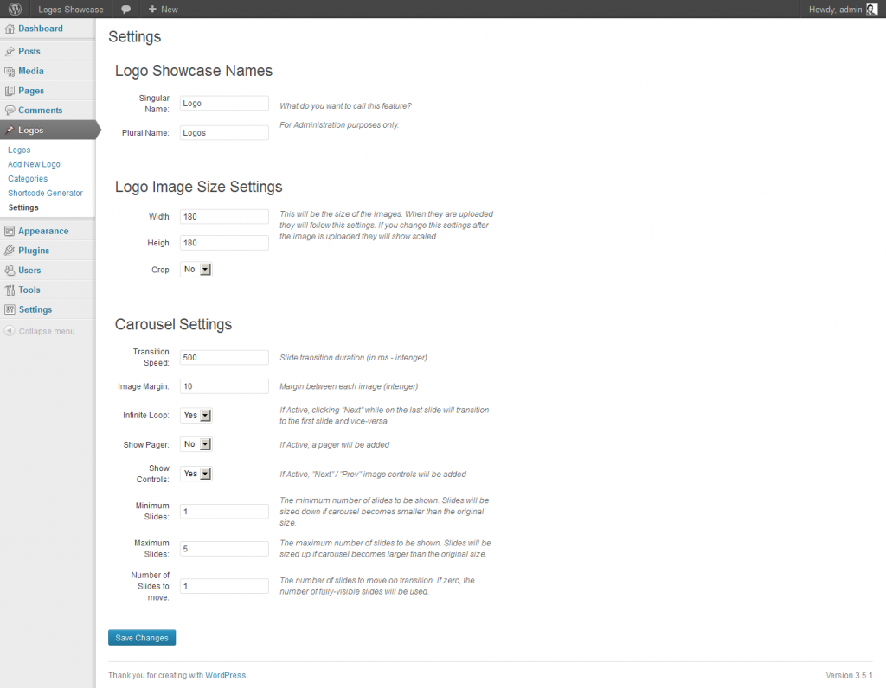
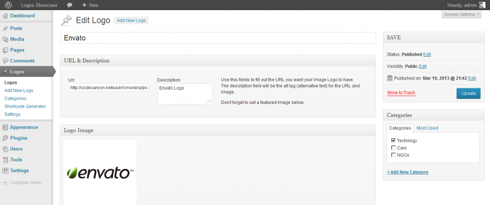
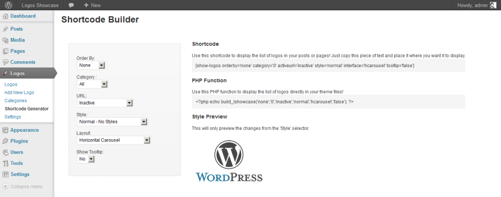
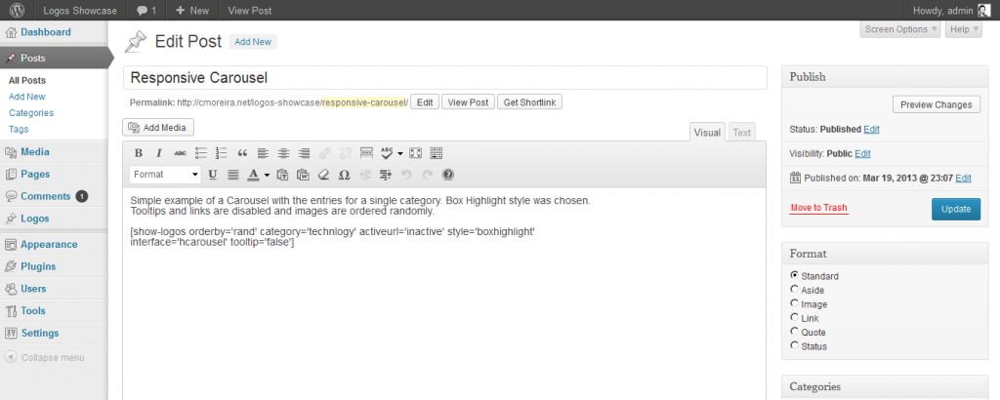
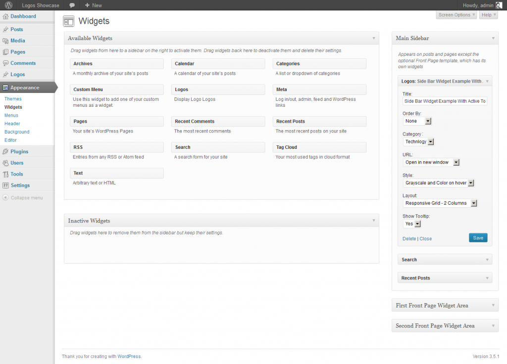
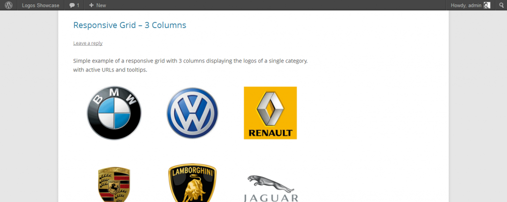

Installing Logos Showcase Plugin is as simple as installing any other WordPress Plugin:
- Upload the ‘logos-showcase’ folder to your WordPress plugin directory ( /wp-content/plugins/ )
- Activate the plugin via your WordPress admin panel
- A new options tab with the name ‘Logos‘ is created in WordPress admin where you can configure and create your maps!
OR
- In your WordPress Administration go to: Plugins > Add New > Upload
and upload the .zip folder of the plugin you just downloaded.
- Active the plugin.
The main functionality of this plugin is the ability to add new Images (potentially logos) to an archive where you can divide them by category and add links and descriptions to them. You can then display them in a grid mode, which can be responsive, or in a carousel slider, also responsive. You can enhance the images with styles and tooltips for a better user experience.
An ideal usage of this plugin would be to display a list of logos of clients, supporters or sponsors of a particular company or project. But the plugin can be used for different purposes.
You can display the logos in 3 different ways
- Normal grid
The images will have a fixed size, but they will adapt to the available space, adapting also to different screen sizes.
- Responsive Grid
The images will be displayed in a grid with the number of columns you set and the images will resize to fit the columns. On smaller screens the grid will adapt, and the images will resize accordingly. In smaller screens if the number of columns set is to big for the size of the screen, less columns will display.
- Horizontal Carousel – Responsive
The images will be presented in a horizontal carousel that is responsive and also works well in touch devices. In the settings of the plugin, you can set how many slides to show, the transition speed and other stuff.
You can enhance the logos, with pre-built styles and tooltips
- Grayscale Style
Compatible with most browsers, you can choose to display the logos on a grayscale version and a bit of transparency, and choose if on hover the image will have the original colors or not.
- Box Highlight
Simple style, that on hover displays a highlight of the image.
- Tooltips
You can choose to display a tooltip or not.
Further more you can display them with active links, and display them by category.
You can display them using shortcodes, php functions or through widgets.
Read a more detailed descriptions of the features.
The link for the Settings is found on the plugin's menu, under 'Settings'.

Settings Page
They are as follow: Logo Showcase Names
Here you can change the names of the plugin in the administration menu and widget.
- Singular Name (Text Value)
- Plural Name(Text Value)
Logo Image Size Settings
This will be the size of the Images. When they are uploaded they will follow this settings. If you change this settings after the image is uploaded they will show scaled.
- Width (Number Value)
- Heigh (Number Value)
- Crop (Yes or No) - If Yes, when you upload new images, they will be cropped to the dimensions specified.
Carousel Settings
This are the settings that will define how the carousels will work and interact.
- Auto Scroll: Slides will automatically transition
- Pause Time: The amount of time (in ms) between each auto transition (if Auto Scroll is On)
- Pause on Hover: Auto scroll will pause when mouse hovers over slider
- Auto Controls: If active, "Start" / "Stop" controls will be added
- Transition Speed: Slide transition duration (in ms -Number Value)
- Image Margin: Margin between each image (Number Value)
- Infinite Loop: If Active, clicking "Next" while on the last slide will transition to the first slide and vice-versa
- Show Pager: If Active, a pager will be added
- Show Controls: If Active, "Next" / "Prev" image controls will be added
- Minimum Slides: The minimum number of slides to be shown. Slides will be sized down if carousel becomes smaller than the original size.
- Maximum Slides:The maximum number of slides to be shown. Slides will be sized up if carousel becomes larger than the original size.
- Number of Slides to move:The number of slides to move on transition. If zero, the number of fully-visible slides will be used.

Edit Entry Screen
When adding or editing a new entry, there are 6 main steps:
- Insert/edit the name/title for this entry. MANDATORY
- Insert/edit the URL if you want the image to have a link
- Insert/edit the description - This will be used in the 'alt' tag of the images and links.
- Set/Change the featured image. This will be the image that will display. MANDATORY
- Choose a category or add a new one.
- SAVE/UPDATE/PUBLISH the entry.
Shortcode & PHP Function
To display the logos in a page or post, you should use a shortcode.
A shortcode is a WordPress-specific code that lets you do nifty things with very little effort. Shortcodes can embed files or create objects that would normally require lots of complicated, ugly code in just one line. Shortcode = shortcut.
You can use the Shortcode Generator to easily build a shortcode that you can copy and paste it where you need it.
You can also use the shortcode generator to generate a php function that you can use in your theme files.

Shortcode Generator
The options are the following:
- Order by (None, ID, Date, Modified, Random)
Chose the order of the logos.
- Category (All or any existing category)Choose if you want to display all the logos or just the ones of a specific category
- URL (Inactive, Open in New Window, Open in Same Window)
Choose if you want the images to have links and if they should open in a new window or the same window.
- Style (list of available styles)
Choose if you want to append any available style to the images.
- Layout (Carousel, Normal Grid, Responsive Grid)
Choose what kind of interface layout you want the logos to display in.
- Show Tooltip (Yes or No)
Set if you want to display the tooltip or not.
After you set the options you want, on the right side the shortcode or PHP function will be ready to copy and you can paste them in the appropriate place.
There is an hidden option, not available in the shortcode generator, to filter out specific ids of logo entries. To do this you just need to add to your shortcode the parameter ids="1,2" (where 1 and 2 are example of IDs of your entries).
Example of shortcode:
[show-logos orderby='rand' category='technlogy' activeurl='inactive' style='boxhighlight' interface='hcarousel' tooltip='false']
You can also use the shortcode generator to generate a php function that you can use in your theme files.

Shortcode in Post Example
Widget
You can also use the widget option to include the logo showcase in a widget area that your theme provides.

Widget Screen
The options are the same as the Shortcode Generator, so you can see the above list for reference.

Example of Grid Display
Changing the CSS files to change the visual of the grid or carousel is not advised, as it will affect possible future updates, you may loose your changes after an update.
However, if you want to change them, here are some tips.
Carousel
The carousel is built with the bxslider jQuery script. On the official page you can find more information about it.
The carousel CSS are in the folder 'bxslider' and are called jquery.bxslider.css.
You can edit the class .bx-wrapper .bx-viewport to change the background color, or to set a border. The default border shadow is commented out, but you can change the settings.
If you want to change the control images (previous and next) you can create your own image, based on the image located at bxslider/images/controls.png
You can also change the jQuery settings for the carousel, in the lshowcase.php file, on the function lshowcase_bxslider_options_js().
Tooltip
The tooltip is built with the jQuery UI tooltip module. You can edit the settings in the tooltip.js file.
The CSS classes are located in the styles.css file with the ui-tooltip class name.
Styles
The styles built in the plugin for the images, are also in the styles.css file. You can find them with comments to identify them. If you want to add a custom style, follow this steps:
- Add your style to the styles.css file.
For example:
.custom-style { } .custom-style:hover{ border:1px solid red; }
- On lshowcase.php search for the function: lshowcase_styles_array().
- Add your custom-style data to the array on the function, like:
"custom" => array (
"class" => "custom-style",
"description" => "My Custom Style",
),
- Your style will now appear on the shortcode generator and widget panel and can be used.
- Is this plugin Responsive?
Yes, the Grid and Carousel layouts in which the images will display are responsive.
- Will the Grayscale style work in all browser.
Potentially not. So far I've tested it in Firefox, Chrome and IE9 and they worked. But there are so many browsers out there and potentially the grayscale style wont work in all.
- Can I display a list of my clients logos and links to their pages with this plugin?
Yes you can. It is the perfect plugin to do this.
- Can I hard-code a grid or carousel to my Wordpress Theme?
Yes, you just need to use the PHP Function provided in the Shortcode Generator option.
- Can I change the visuals of the tooltip?
Yes, but at your own risk. The CSS class is called ui-tooltip and it's located in the styles.css file in the plugin folder.
- I want to include this plugin in my commercial wordpress template and sell it, can I do this?
You should contact me first so we can discuss this possibility.
{kind=link}
{kind=link}
{kind=link}
{kind=link}
{kind=link}
{kind=link}